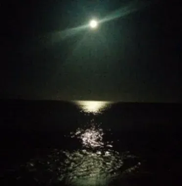

Fiction
Winds
It’s hard for a man to escape himself, even under a Caribbean moon.
Toasted Cheese — Editor’s Pick

He lies on the slightly damp lounge chair, on a towel, to insulate himself from the moisture. He is wearing a white linen shirt and tan linen pants, which are near phosphorescent under the three quarter Caribbean moon. He is pleased by the contrast between his dark hands and the light linen, evocative of luxury and lust. His cigar, an overrated Cuban, is drafting poorly and the ash is uneven. He struggles with the steady twenty knot easterly, pushing just-lit matches against the unburned edge and taking excessively deep puffs to compensate for the shoddy draw, which annoys him. He considers masturbating under the moonlight, spitting into the sand. He stares past his sneakers at the breaking surf. He looks up sharply. “I don’t know,” he says. The words sneak between the sounds of the wind and the surf and linger around his head, even as the smoke dissipates.
They had left the house early that morning, propelled by the fine sheen of sweat that arose despite the light flow from the overhead fan. They were staying in the house of an acquaintance, Hank Tenance, someone he’d recently done a deal with. He’d paid Hank a lot of money for his business, perhaps more than was necessary. But he’d admired the unabashed way the older man pursued his interests, admired Hank’s collection of large bright abstract canvasses of young artists whose names he didn’t know, and he wasn’t as sharp in the contract terms as he might have been. He shrugged it off: at worst he’d made an indiscernible amount less for the institutions he invested for. A part of him wished he had been invited to use the house as an artist in residence, for writing or drawing, as others evidently were, but then he was neither artist nor writer, just had memories, shadows of aspirations, and he was intrigued by the idea of having a patron. Even a mentor would have been nice, but he was too articulate to proffer the seduction of doubt, to arouse in others the prospect of gratification through dispensing guidance under the guise of affection, and it was way past that day. The island was small, a half hour to its raw circumference. The house was on a point that separated the calm Caribbean Sea from the turbulent Atlantic. At all hours the ocean surf pounded against the sea wall, an old cracked slab of concrete that reminded him of ancient buttresses, castle walls in Morocco, the days of grand undertakings with limited technology. He liked that the damp heat awakened them early, forcing a more natural rhythm with the sun and by association other elements. At home they had to leave the air conditioner fan on year round to drown the street noises. He felt energized by the repeated crash of the surf, sounding much larger than it actually was. So he got up unusually early, although even then Sarah was already awake, already another book half read, some obscure Spanish mystery about a missing Vermeer, which he might find interesting, or one of those horse mysteries, a thousand and one ways to slip them poison, which he would not. She was an intent and consistent reader, even more so down here. He was always amazed at the number of pages she consumed. He read as well – his suitcase weighed sixty-four pounds due largely to books – but not as early, not as faithfully. The heaviest was an oversized British tome about kitchen renovations, which he thought they could look at together, but hadn’t. He reverted to science fiction, once his favorite, but it was hard to find new themes. “Ready?” said Sarah. She looked up from the couch.
Even at this hour she slathered on forty-five-plus sun block. Her legs were still terrific, he thought, and in the dark evenings by the bar the wrinkles disappeared and he could see the structural beauty of her earlier days. He’d go without sunscreen for twenty or thirty minutes, then put on fifteen, working to take a tan back to New York. He liked the color on his face, thought it made him look better, lowered the contrast to the dark spots that had appeared, when he couldn’t remember, but he didn’t like them, used some kind of lotion his dermatologist recommended, acid and oil, but it seemed to just spread them out, less intense but still there, under his close mirror scrutiny. But even more he liked a tan belly, to see the leathery color rise above the line of his swimsuit, a color of warmth and affluence to bolster him through the dark winter months, a color he could inspect with pleasure in a morning shower or evening bath. He searched for sunglasses, tied his sneakers, put on a linen shirt that let him feel the breezes, picked up and put down his watch, then put it on, filled a water bottle, found a bandana he stuffed in his pocket, went to the fridge, poured and drank half a glass of orange juice, jammed some dried apricots in his other pocket. Sarah had turned several pages. “You bet,” he said. He untied the rope that Monita, the housekeeper, used to keep the metal front doors together. He had struggled trying to shut them tightly their first evening, thinking about bugs, until Sarah had pointed out that the wonderful dark polished wooden window louvers that so effectively managed the breeze had no screens, and they’d both laughed.
Once out back, they headed in the direction of a great white house they’d spotted when they sailed in. They couldn’t get very close, the path was marked “private” in strong black hand-printed letters on a white cross at the bottom of the hill on which the house perched, but it looked grand, one of the enclaves of the rich and richer they occasionally glimpsed peeking above the hilltop shrubs. “I love the breeze we get all the time where we’re staying,” he said. “And the noise of the waves.” She took hold of his arm. “It’s nice it’s so simple,” he said, just the front deck, an open living area and two bedrooms, the one they were in had sliding glass doors that they tried closing to keep out the biting bugs, but then they lost the air currents blowing through and got too hot, so he regulated the opening through the night. He looked up the hill. “Would be great to have something like this.” “I’d rather rent, not have the hassles,” Sarah said. She tried to get him to pick up after himself more, clean some dishes, but the effort had become greater than the results. With renting, at least whatever mess accumulated in the week could be left behind. She started walking, and said, “Monita told me Hank had to redo the whole terrace, raise it and the walls, because of water coming in over the sea wall.” As a child he had dreamed of owning homes all over the world, places he could come to that would be his, his things in them, always ready. “Yeah, it’s great this way,” he said. He looked up at the high white house, imagined its views, whitewashed rooms with four-posters veiled in mosquito netting graceful in perfect shafts of afternoon sunlight. Of course, there was the maintenance.
He caught up to Sarah, and they walked briskly, taking advantage of the lesser heat of morning. He wanted to explore every set of battered stone steps that went up into a hill or promontory, and she went along. They stopped at a hammock set up on the Atlantic side, and he lay down across it, inviting her to tuck in next to him, which she did, although not fully comfortable. They swung for a while, looking out towards distant islands softened by haze, listening to the waves breaking beneath their vision. He closed his eyes, lulled by the rhythm of the waves and the hammock rocking, and, as he often did, watching the waves curl against the cracked concrete slab or lying on the beach feeling the sun on his face, he wandered in his mind, drifted among memories, engaged in an inner dialogue trying to understand, call up willful intent, implant suggestions to pursue greater purpose. He bought other people’s ideas, in the guise of companies, and resold them, piggybacking a margin on market inefficiencies. Making money for pension funds, striving for quarter points. Seeking to aggregate many small things into significance. “Okay, I’m done, let’s go,” Sarah stood up, shaking him back. From wondering, again, how to get beyond the same deals the same way, other people’s ideas reaping huge rewards. He rose slowly, taking her hand. When they returned Monita had already arrived, cut up some papaya which she had put on the table under little net tents. “We’re going for a swim, Monita, then we’ll have breakfast, okay?” he told her. Sarah and Monita had talked a lot the last few days, while he stared out at the sea, about Monita’s nine children and what they were up to, about being a mother and earning money and schools and her morning workers’ boat ride and how often she was at the house and when the Tenances were coming. He had asked if she could get some lobsters to cook for that night, but noted she had more of the small red fish they had eaten yesterday. “Yes please. Them’s red hine,” she said. “Yesterday was red snapper.” He asked about the lobster. Tonight, he reminded, was their last dinner before leaving.
“Yes, please, boats couldn’t go out yesterday, the storm,” she said. “I be lucky to get these, they sell mostly all to the hotel.” “Well, it’s great we got these,” said Sarah. “That sauce you made yesterday was amazing. You’re an incredible cook.” He thought Sarah was overdoing it, but Monita beamed, her broad face opening up, a lower front tooth gone, the rolls of her body, like so many island women, tumbling with her own laughter. This morning she wore a dress, a black and white print. “Sure, something to look forward to when we come back,” he said, and Monita laughed some more. They walked down to the hotel beach, postcard perfect, to go for a swim. Sarah was uncomfortable about taking a couple of the hotel lounge chairs, since they weren’t guests, but he reassured her, again, that the owner of the house had said it was fine, and they’d eaten dinner in the hotel restaurant their first night, and would set up a credit account, and it was fine.
The surf here was just a few inches high; it lapped briefly and quietly on the shore. The water seemed cool just for an instant, then was in equilibrium with their bodies. He didn’t like snorkeling, didn’t like his head under water, and with just his goggles he had to keep moving, so he rarely saw any of the fabled fish people talked about. He said he didn’t care. They talked standing in the water, mostly variations on “Nice, really nice.” They walked back to where they had put their towels under one of the palms that sprung from the sand. Nobody was near them. “Boy, people are weird,” he said. “On the other side of the jetty, there’s no breeze, all they’d have to do is walk fifty yards this direction and they wouldn’t bake in the still air, and they just sit there. I don’t get it.” “They settle in, that’s all,” she said. “Just get up, a few feet, a little effort.” “Not everybody looks for the best angle all the time, Martin.” If she started talking about finding contentment and peace, she was afraid she wouldn’t stop. “Acceptance isn’t a virtue if you… it’s just taking a few steps, for the whole afternoon.” He grabbed his towel. They read, then walked over to the hotel reception to give them a credit card imprint. His broker had joked that the markets went up every time he went away, so this time he bought some S&P indexed securities. He tried to avoid the New York Times fax the resorts now provided with breakfast, but Sarah had no such aversion, and over her shoulder he saw that the market had barely moved. The phone line for the credit card was down, as it had been the day before. He made an effort to smile and say no problem, he’d come back later.
They returned to the house, ate the papaya and scrambled eggs Monita prepared at his request. She had changed into a faded t-shirt and green shorts that swaddled her large body like the Michelin tire logo.
He looked around the house, at the large paintings and open terrace and window louvers polished to a high sheen and bookshelves filled with hardbacks, and it occurred to him that the older man had gotten the better of him in the deal.
“Let’s go back to the hotel beach,” he said. Living on the edge, raking it in, not as an institution, but as a person. Big bright abstruse canvasses on all his walls, how could you tell what they were worth? Martin had had ideas, understood big markets.
Sarah remembered the enthusiasm of their early days, talking all the time about creative projects, new services, inventions, it helped her overcome her dismay learning that he worked in finance. Somewhere, Sarah often thought, they’d left that energy behind, and hadn’t found its replacement. She wasn’t unhappy, indeed was more than content, with children now grown and off, the apartment bigger with that absence, her only pang was his, when he emphasized his sense of failure, his longing, and worse, when he did nothing about it. She could feel the hurt, but bounded by his inertia could find no place for action. And her contentment disturbed him, but she couldn’t find a salve for his self-inflicted wound. It was just a matter of timing, he’d said, starting something new. But days become years when you’re not counting them, and the years left can seem like days when you do.
“Do you think it’s okay?” Sarah said. “I mean the credit card hasn’t cleared yet, they might not like it.” “These are the islands, it’s no big deal.” “Still, it’s so nice here, I don’t mind staying.”
“We can’t swim here, we’ll have to walk over anyway.” “I’m just not so sure. It is marked private.” “You weren’t always like this, you know.” He tried to laugh, to stop before roaming through the dangers of shared history. “I swear, if we were on the Titanic, and one of those lifeboats went by half-filled, I’d say, ‘Let’s jump in!’ and you’d say, ‘I’m not so sure, they must know what they’re doing.’ Let’s just go.” Forty-five minutes later, after he had stuffed his backpack with a second bathing suit, no chafing later from a wet suit, and books and lotions and water bottle and goggles and tee shirt and a little chocolate and some of the fresh coconut pieces Monita had cut from one he found lying near the house, though she had thought it would be too dry – he drank all the milk inside the coconut, past when he had lost the taste for it – they walked to the beach. At the last minute Sarah put down one book and packed another.
They swam, he lay in the sun. He noticed that further out and to the right of where they swam the surf broke early and hard. His head tickled; he scratched it and felt bumps where his receded hair line had let in too much sun; he put lotion on everywhere, but still forgot that spot. He brushed the sand off his back, picked up the towel and shook it, then carefully lay on it. Sarah sat under the palm tree shade and read. The reflections of the sun and the pink flecks of coral in the sand swirled like a glossy seashell in the fine porcelain of her skin.
The pages turned, so quickly they barely got scuffed. She skipped what didn’t interest her, read to her own standards, had no patience for clutter and fill. She looked over at Martin and smiled under her broad straw hat. She wanted to massage away his fussing, tell him it was all right, but she hesitated and lost the moment.
He thought he felt sand bugs in his itches, and after a while he went to get a lime daiquiri at the bar, the drink recommended by Lennox, the bartender. He’d be happy with an early afternoon buzz, to eat lunch at the bar, but Monita prepared lunch and Sarah would insist they eat that. He asked about the break he had noticed earlier. “That’s over the reef, you want to be careful, swimming there,” Lennox said, cutting the limes. “Get stuck in that, it cut you bad.” “It’s got a nice break on it, though,” he flicked his wrist. “Think you could ride over it, in a hobie cat?” “That be a tricky ride, man, you don’t want to spill. But be a fun trip.” With a flourish he put the daiquiri on the counter. Martin held the cool moisture of the glass against his palm, downed his drink, brought back a pair to where Sarah was lying. She read, and he looked out over the water, but the slight curl of the low breaking waves wasn’t interesting, none of the enveloping sound and dashing spray of the oceanside surf. They ate a lunch of small red fish, took a nap, thought about making love but felt constrained, Monita didn’t leave till four to take the workers’ boat back to her island. They walked back to the beach, waded into the water, then lay down, Sarah in a chaise under the palm tree, Martin on his towel, putting thirty on his face and fifteen on his body. At least there weren’t too many people on the beach. He was a bit fried – it had not been an easy year – and they were here because he couldn’t afford the thousand dollar a night freight on Mustique. When he felt the sun’s heat push past the sunblock, he got up. “I think I’ll go over, see if I can rent a hobie cat from the hotel, okay? he said. She nodded. “Want to come? Two can fit, like we used to.” He slapped his stomach. “No, I’m happy right here. Have fun, pooch. Be careful, it’s a while since we’ve done any sailing.” “Sailing is easy, thanks.”
She remembered their first sailing together. He said he’d crewed with friends, and she’d done the same and more on her father’s twelve meter. They discovered love in close quarters, the kind that would last. They nearly capsized in a sudden squall that came up on their backs sailing out of St. Johns, when he hadn’t attached the jib stay and it ballooned over their heads bigger than the sky. He ran forward along the main boom, getting knocked, but lowering the jib into the water so that they could laugh about it. She got ill reading the maps, so she steered while he set courses, pondering over compass readings and sightings, which got them around just fine. She was ready to sail out to the Baths on Virgin Gorda, but he said they’d been there before and he would rather see new places.
He walked to reception, where they finally had gotten through with his credit card, and arranged for a boat. He started to rig it himself, but got caught up with the sheets, and the beach staff guy helped him. He luffed close to the shore, but once past the lee line of the point the steady wind carried him along. His first turns were rough, his small boat sailing had been in centerboard monohulls. But the way the boat whipped on top of the water, its quick turns and easy jibes, was joyous, and he soon ventured further out into the channel, taking long tacks and quick downwind runs. Remembering how quickly it got dark, he decided to head back to the hotel beach while the sun was still high. He rode a broad reach with the sun in his face, eyes closed, feeling the wind. He realized he was steering towards the outer reef. “Be a fun trip, man.” He made out the white caps breaking, could see the dark below the surface in the troughs between the waves. I could make it over, he thought. Be close, but I could do it. He imagined catching one of the waves in the cat, rising up, surfing over the reef and riding the break, high and fast. The timing would be key, quick turns, keep up enough speed to set in just in front of a crest and just behind the reef. He tacked back and forth, looking at the break, at the slim surface over the reef in between the waves, rock and coral jutting through. The wind picked up, the height of the waves grew larger as he approached the reef line.
Sarah cribbed page four twenty-seven and looked past the beach, searching for the tiny white triangle whose shape she had noted earlier. For an instant it felt as if her heart divided and a portion fled over the water, searching. For an instant she wanted only to ride with him, with her will and all her heart. But she grew weary now, and her heart reunited back on the beach lying under the shade of the palm that jutted sharply out of the sand. She picked up the book, but felt no compulsion to finish; endings rarely satisfied her.
He tacked, tacked again. He remembered trying to row a raft in whitewater a couple of years ago, when the boatman said “Want to give it a try?” He broke an oar. Sarah quickly unstrapped the spare before they got to the next rapids. He zigzagged, hard right and left, trying to judge the frequency of the waves, not easy because they ran across each other coming off the channel as well as over the shallow reef. The boat fluttered under his hand, pummeled sideways by the conflicting intersection of the wave fronts. He came off, lost the breeze, the sail flapped searching for traction, he pushed the sail with his hand to catch some wind and make way, went up and turned around. He just had to find the measure, the technique, it was only a matter of timing. His thoughts raced past ascents not made, chances not taken. Cut across diagonally, ride one crest, drop into the trough just in front of the reef, get picked up by the next crest, surf across. The exhilaration of surging over. The danger was turning too soon or too close, he could shoot into the reef in a trough. “Get stuck in that, it cut you bad, man.” He imagined the raking sound against the hulls, falling into it, the explanations, the hotel beach staff having to bail him out, listening to his explanations without smirking, his legs cut, sitting while someone bandaged them, discussing infection, Sarah’s questions. Her understanding. On vacation. He rode over a crest, fast, faster then he’d gone all day, dropped in, watched the wave break high over the reef, and loud, louder than the roll of stones tossed at the ocean’s edge, rumbling through the hulls, he stared at the sharp points of the reef as they emerged behind the wave, the rumbling louder, cascade of stonesound and breaking white water, higher than his head, too loud, too high, too sharp, too close, he cut out, rode sideways back into the wind and across the wave front, away from the reef and towards the hotel shore. He turned to look, thinking, knowing, if he’d kept his speed up he could have made it. Fuck it, he thought, it’s just an afternoon sail on a vacation.
“How was the sailing?” Sarah asked. Fun, he told her. They were cradling cool daiquiris in the hotel bar. “From the way you were heading, I almost thought you were going to surf over the reef,” she said. “That would have been neat.” “Over the reef? No, they said, the bartender, not a good idea. And not my boat. You know.”
In the evening, after dinner, more of the red fish, in the fine familiar broth of saffron and spices, and after picking through bones while swatting at bugs had driven them into the bedroom and Sarah had read and fallen asleep, he went out onto the deck. He lay down on a chaise lounge, but quickly felt the damp through the linen shirt, its long sleeves slightly short from too many washings, and pants he had put on to keep the bugs off. He got up, went to get a cigar, matches, a snipper, and a towel, and put on his sneakers, so as not to endure the damp sand curdling under his feet. He draped the towel on the chaise, lay on top of it. He remembered that the last Hoya robusto he had smoked hadn’t burned well, too much effort to pull and an uneven edge, so much for the magic of real Cubans, but he didn’t feel like getting up to find something different.
He heard the crashing waves and thought of their first trip to the Caribbean, just a few months after he and Sarah had met, in the pre-children state of love and poverty that allowed for taxis, restaurants and vacation. They flew to Virgin Gorda to camp out at the Baths. Camping, he realized, almost as if it were a new idea. Sleeping in bags open to the stars. When it drizzled, from clouds they could see approaching under the bright moon, they simply tucked away the bags, sat it out, poking the fire, listening to the drops sizzle, laughing. When they’d told the coal-black customs officer at the airport they were sleeping out, he looked at them oddly, especially blonde good looking American Sarah, as if debating if he should let them on the island. They hitched a ride and set up an easy camp, putting it away each morning after swimming to walk up a sandy windswept road lined with shrubs feeling like he was in a Conrad novel, to a thatched roof bar where they drank gin and tonics and he read Portnoy’s Complaint and laughed so loudly he must have sold a dozen copies, until the big boats left the beach and they walked back. The Baths were a collection of house-sized rocks tossed on top of each other, forming pools and stone hallways over the sand. They wandered through the maze with no determination to get out, sank into the soft sand bottoms of quiet calm ponds shrouded by the great boulders. They started climbing, barefooted, just in their bathing suits. Sarah scrambled to the top of one of the rocks, over the ocean, shaking her long blonde hair off her face. He followed her halfway up until he slid on the slight moss nurtured by the spray. He would have stopped there, but Sarah was waving to him, shouting, barely discernible over the wind and breaking water, “C’mon up, the view’s fantastic.” I see plenty from here, he thought, then inched his way, thinking again if only he did more pull-ups he’d be better at this, scraping his knees by hugging the rock too close. Near the top, he heard her yell and turned to see her long lithe body in its one piece black bathing suit knife by him into the water straight and true. He pulled himself over, and looked around. It was beautiful, different, seeing the expanse of great rocks tumbled with a force beyond imagining, the beach melding into the tropical greens, the pure shades of water indicating and belying depth. He tried to enjoy it but the thought of getting down dominated. Only one way, thanks to Sarah. He stood at the edge, trying to will his sight to the level of his feet, six feet lower in reality, and jumped feet first splashing his arms hard as he could to prevent his head from going under, failing for a moment, hearing different sounds, closed in, and then he was up and gulping air and Sarah was next to him hugging him, her laughter blending with the sounds of the waves and the wind. They swam ashore and he played in the sand, jumped around dunes and rocks until she was too tired to follow and they lay feeling the sun and sand, the tingle of last night’s love-making parading with the anticipation of the night to come. Swimming, no shower afterward, sleeping on the beach and laughing and rolling up their bags when it rained. Sitting by the fire, stoned, the warm breeze all around him, he’d felt wise, like he understood things.
Was I ever really like that? he wonders, as he cups his hands to light a match, trying to get his cigar to burn evenly in the wind.
Winds was published in the online literary journal Toasted Cheese, as an Editor’s Pick.